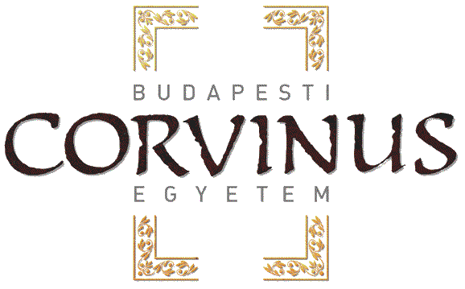

Portáltechnológia MSc
Bemutatkozás - Balogh Zoltán
- 2002-2007 BCE, gazdasági informatika
- Üzleti informatika szakirány
- Corvinus - tudományos segédmunkatárs
- Phd hallgató
- E-mail: zoltan.balogh2@uni-corvinus.hu
Előny, (előfeltétel)
- Internet alkalmazásfejlesztés
- Webfejlesztés
- Adatbázisok
- Portáltechnológiák BSc
- HTML, CSS nyelv alapos ismerete
- JS ismerete
- MySQL
- OOP
Tantárgy leírása
- a korszerű kliens oldali technológiákkal
- a legújabb kliensoldali webfejlesztési technológiák bemutatása
- a HTML5 és CSS3 lehetőségei
- átfogó képet kapnak a kliens-szerver architektúra kapcsolatáról
- előzőleg elsajátított bármely szerveroldali programozási nyelvben tanultak hasznosítása
Óra szerkezete
- Elméleti tananyag előadás
- Gyakorlatokat mindenki a saját gépén csinálja
Tematika – I. negyedév
- Bemutatkozás, HTML, CSS, ismétlés
- Javascript alapjai, Javascript OOP
- jQuery alapjai, YUI, kliens-szerver kommunikáció, JSON, JSONP
- jQuery Ajax + JSON
- HTML Formok + jQuery, jQuery UI
- jQuery Template, kliens és szerver oldal összekötése
- ExtJS
- ZH (november 8.)
Tematika – II. negyedév
- Webes trendek, új lehetőségek a webfejlesztés terén, HTML 5, CSS3
- Web SQL, Indexed DB, YQL
- Web Workers, Web Socket
- GeoLocation, Mashup készítése, szemantikus web, JS alternatív felhasználási lehetőségei, alkalmazásfejlesztés
- ZH (december 13.)
Pontszámok
- Évközi - 40%
- Év végi vizsga - 40%
- Beadandó feladat - 20%
- 2. negyedévben előre egyeztetve, max. 2-3 fő
- Házi feladat - 5-5%
←
→
/
#